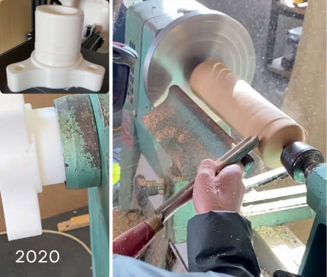
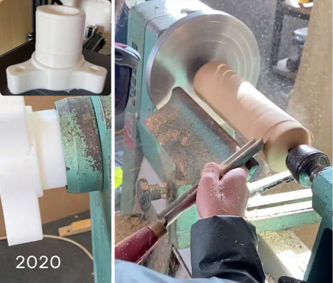

Featured Projects
Hi, I'm Seán
I'm a student, scientist, and engineer. Currently, I'm a 1st year student in Immersive Software Engineering at the University of Limerick, balancing my studies with developing VerifyMe - an authorship verification system, robust to AI mimicry, that uses stylometry to compare writing style and verify authenticity. I was fortunate enough to be named the BT Young Scientist of 2024 for this work, and I represented Ireland at EUCYS and placed second.
In my free time, I mountain-bike, read non-fiction, travel, and tinker with projects in my bedroom workshop. I live for solving tangible problems and exploring new ideas where disciplines interconnect.
This site showcases my skills, projects, and other information which I find valuable. I'm always excited to connect with people building meaningful things. If you have any ideas, or any questions, please email me.
Interests: Systems Engineering, Behavioral Psychology, Deep Learning
Featured Projects
Below are resources which I find to be especially useful and regularly learn from.
If you have any recommendations please email me.

Solution Enthusiast


 
